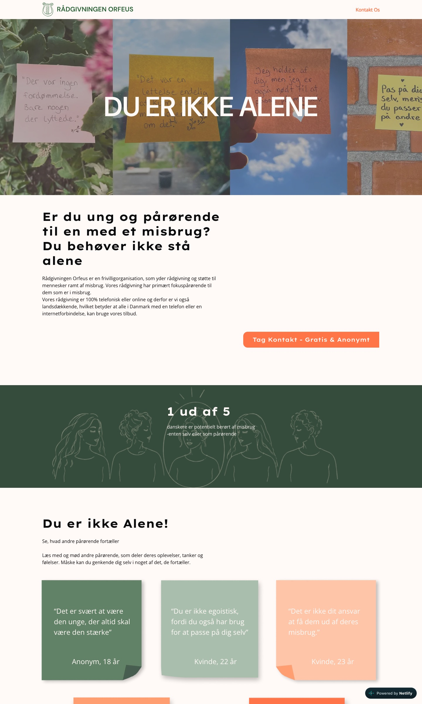

Skoleprojekt · Multimediedesign
Tema 7 · Indhold II · 2. semester
Orfeus
En kampagneside og SoMe-indhold til Rådgivningen Orfeus, der giver gratis og anonym rådgivning til pårørende til mennesker med et misbrug. Målet var at gøre det nemmere for unge pårørende at række ud efter hjælp.
Skoleprojekt – ikke en rigtig hjemmeside. Kampagnen er lavet som skoleopgave med Rådgivningen Orfeus som case. Det er ikke Orfeus' officielle hjemmeside, og nogle tekster er stadig pladsholdere.

Opgave
Tema 7 · Indhold II
Multimediedesign, 2026
Team
Gruppe 2: Frederikke Møller Levin, Karla Nordin Friis Jensen, Laura Sandra Tagholm Hansen, Laurits-Emil Larsen og Sandra Møller Gregersen
Værktøjer
Figma, Astro, HTML og CSS, Netlify og Kanban
Type
Kampagneside, SoMe-indhold, illustrationer og klistermærker
Udfordringen
At bryde tabuet om at søge hjælp
Vores research viste, at pårørende ofte føler skam, skyld og ensomhed og ikke ved, hvordan de skal søge hjælp. Vi spurgte derfor: Hvordan kan digitalt indhold nedbryde tabuet for unge og give dem en følelse af anerkendelse og fællesskab hos Orfeus?
Vi lavede desk research på organisationer som TUBA, Red Barnet og CAS, analyserede, hvordan de taler til unge på sociale medier, og interviewede pårørende om deres oplevelser.

Konceptet
Du er ikke alene
Ud fra indsigterne udviklede vi et koncept med personlige fortællinger, citater og genkendelige situationer fra pårørendes hverdag. Håndskrevne post-its, illustrationer og klistermærker skulle gøre udtrykket trygt, personligt og genkendeligt.
Vi testede designet undervejs og brugte feedbacken til at justere. Testen viste for eksempel, at runde billeder gav mere ro og nærvær end firkantede, så dem skiftede vi til.

Processen
Fra research til færdig side
- Double Diamond som ramme: discover, define, develop og deliver.
- Interviews, syntese og How Might We-spørgsmål, der blev til målgruppe og Value Proposition Canvas.
- Moodboard, content strategi, kunderejse og indholdsplan for SoMe.
- Prototype i Figma og den færdige side bygget i Astro og udgivet på Netlify.
1 ud af 5
danskere er potentielt berørt af misbrug, enten selv eller som pårørende. Tallet er et af sidens bærende budskaber.
Prøv selv
Hele hjemmesiden
Bemærk: skoleprojekt og ikke Orfeus' officielle hjemmeside. Scroll ned gennem siden og klik på post-its'ene.